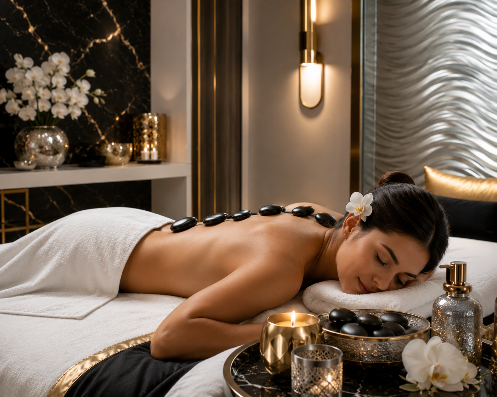

Aromatherapy Massage
Combines traditional Swedish massage with natural essential oils to soothe the body and mind. Different plant oils are used to target specific goals like relaxation, energy, or mood enhancement.
Book Now
Swedish Massage
Primarily utilizes oil or lotion and combines long, flowing strokes, kneading, and rhythmic tapping to improve blood circulation, ease muscle tension, and relieve daily stress.
Book Now
Deep Tissue Massage
Focuses on realigning deeper layers of muscles and connective tissue. It involves slower strokes and more direct, intense pressure to relieve chronic tension and stubborn muscle knots. Book Now
Trigger Point Therapy
Focuses on specific areas of tight muscle fibers ("knots") that can cause pain in other parts of the body. It uses cycles of isolated pressure and release to alleviate pain and restore function.
Book Now
Hot Stone Massage
Heated, smooth stones are placed on strategic points on the body and used by the therapist to massage muscles. The heat helps relax tight muscles and improves blood flow.
Book Now
Thai Massage
More active than traditional massages. The therapist moves your body into various passive yoga-like stretches, combining acupressure and joint mobilization to relieve stress, strengthen immunity, and improve flexibility.
Book Now